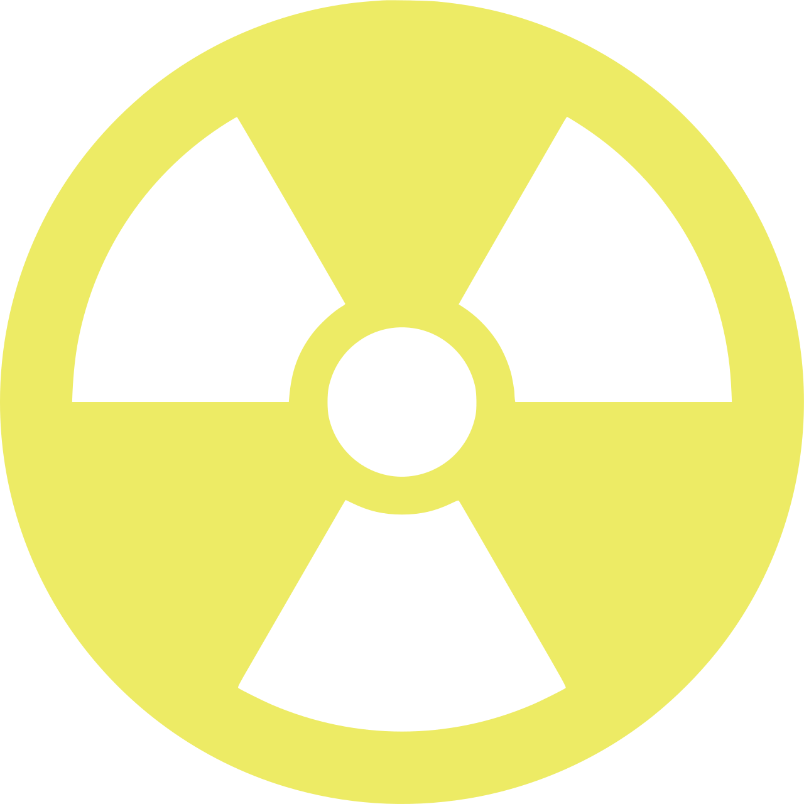

NUCLEAR 14Nuclear 14 is a multiplayer survival role-playing game set in a post-nuclear apocalyptic world.
Shape the lore as you join the Vault Dwellers as they try to maintain their fragile existence by managing scarce resources and repelling the dangers of the Washington Wasteland.
To play Nuclear 14, download the Space Station 14 launcher and connect to Nuclear 14.
You can also use the direct-connect URL:
Nuclear 14 is an open-source project under development, and we need your help. Content (YAML), spriters, and C# developers are especially wanted.
We have a list of issues and wanted content that can help you get started.
If you need help getting started contributing to Nuclear 14, see our Contributor's Guide.
Talk to us on Discord if you are interested in working on major gameplay mechanics and systems.
Nuclear 14 is part of the Singularity Network.